Galeria
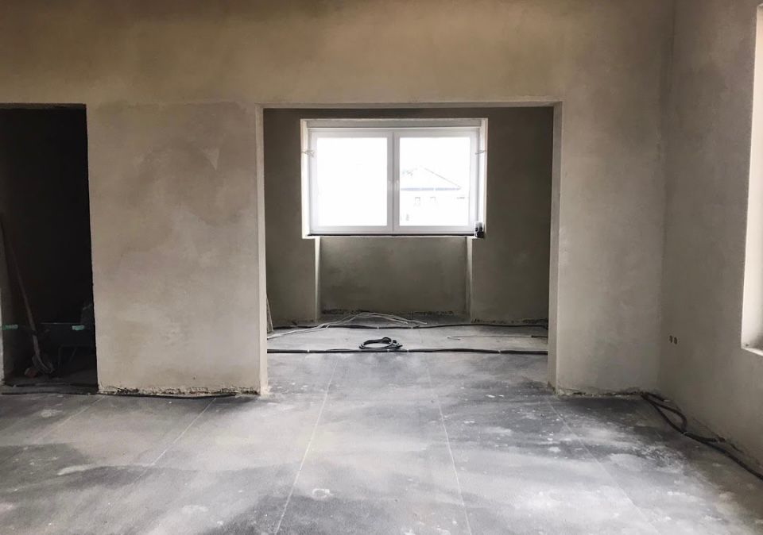
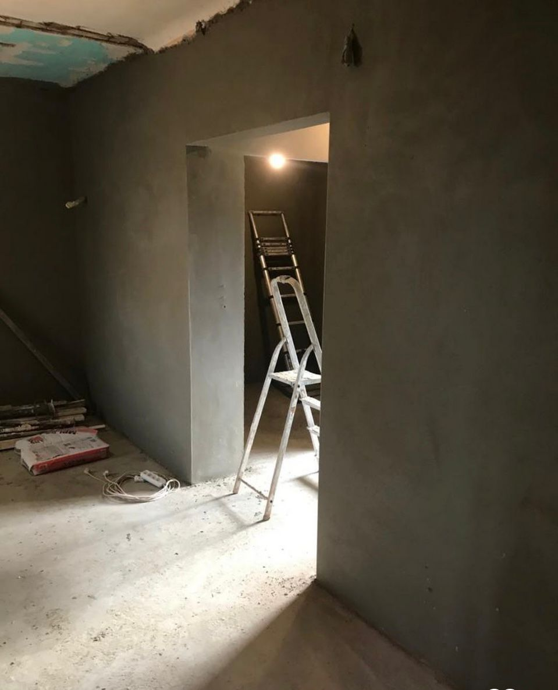
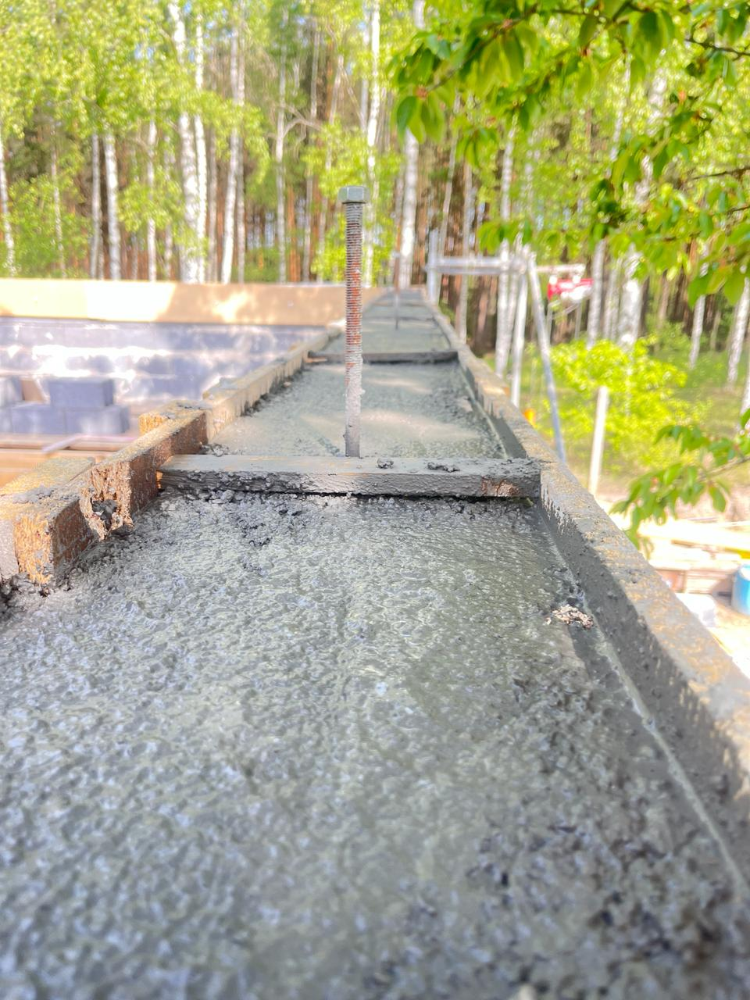
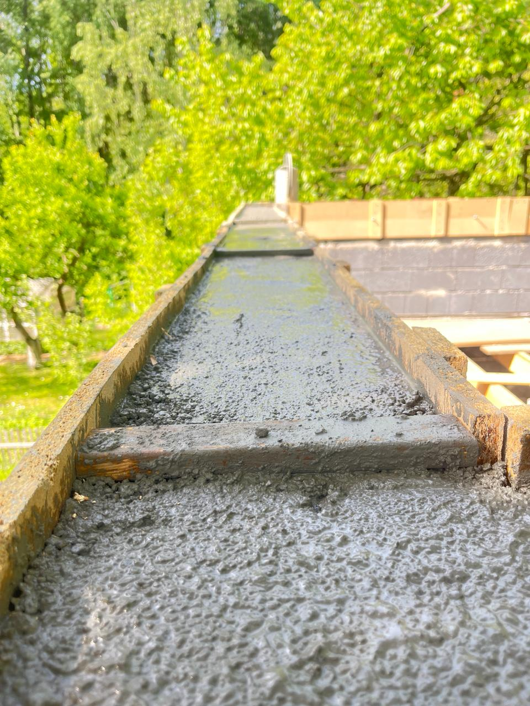
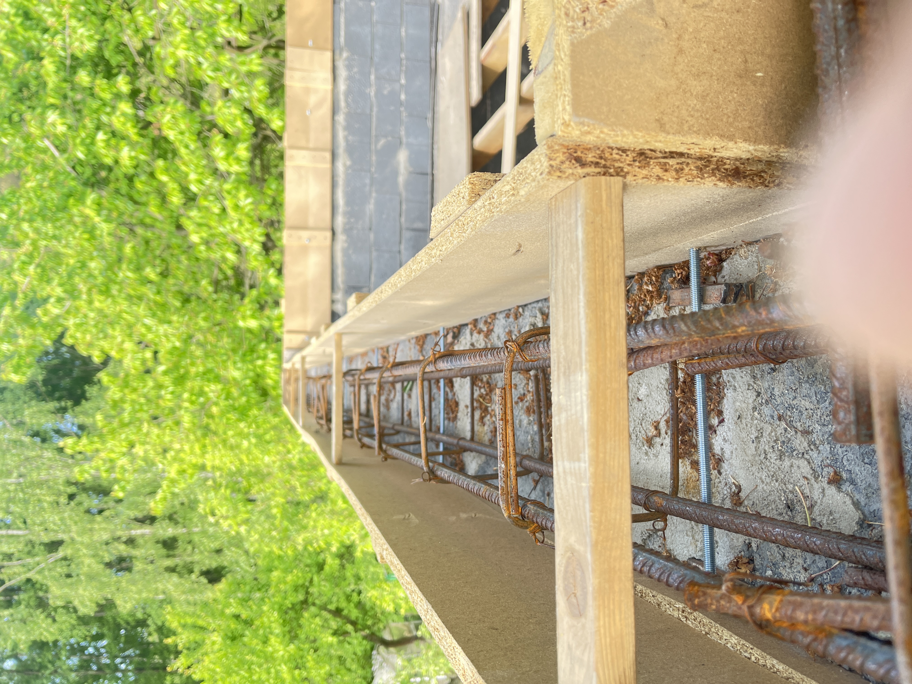
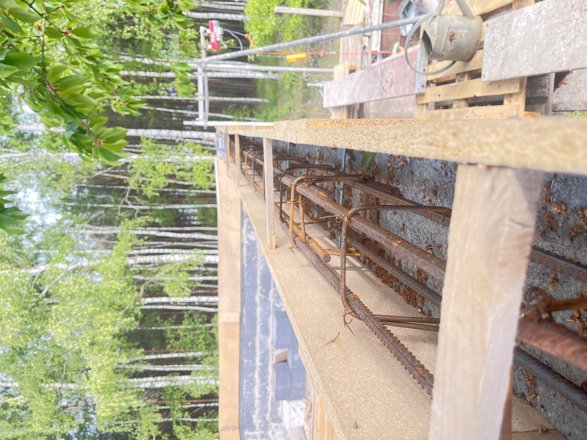
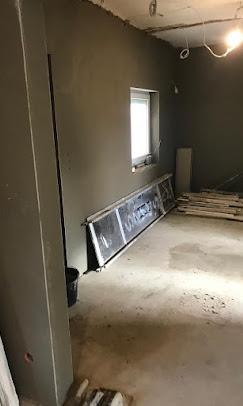
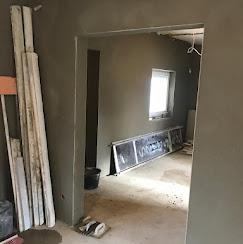
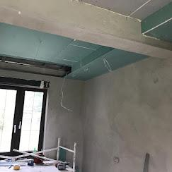
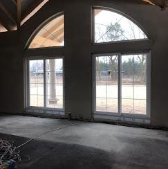
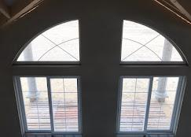
Filmy z realizacji
Stan PRZED wykonaniem – Etap 1
Stan PO wykonaniu – Etap 1
Stan PRZED wykonaniem – Etap 2
Stan PO wykonaniu – Etap 2
Adaptacja poddasza – Etap 1
Adaptacja poddasza – Etap 2
Adaptacja poddasza – Etap 3
Kontakt
Tel: 533 611 028 WhatsApp